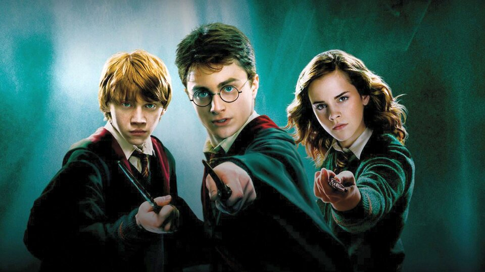

Сайт о Гарри Поттере
Фильмы о Гарри Поттере
Серия фильмов о Гарри Поттере — серия фильмов, основанных на книгах о Гарри Поттере английской писательницы Дж. К. Роулинг. Серия выпущена компанией Warner Bros. и состоит из десяти фильмов в жанре фэнтези, включая основную серию — начиная с «Гарри Поттер и Философский Камень» (2001) и заканчивая «Гарри Поттер и Дары Смерти: Часть 2» (2011) — а также спин-оффа «Фантастические твари и где они обитают» (2016) и его сиквела «Фантастические твари: Преступления Грин-де-Вальда» (2018). В 2022 году ожидается выход триквела «Фантастических тварей».

Серия фильмов спродюсирована Дэвидом Хейманом, а Дэниел Рэдклифф, Руперт Гринт и Эмма Уотсон сыграли роли трёх главных героев: Гарри Поттера, Рона Уизли и Гермионы Грейнджер. Над серией работали 4 режиссёра: Крис Коламбус, Альфонсо Куарон, Майк Ньюэлл и Дэвид Йейтс. Франшиза занимает 3-е место в списке самых прибыльных серий фильмов с 9,2 млрд $ мировой прибыли.

Серия романов о Гарри Поттере была экранизирована в следующих фильмах:
Гарри Поттер и философский камень — 2001 год.
Гарри Поттер и тайная комната — 2002 год.
Гарри Поттер и узник Азкабана — 2004 год.
Гарри Поттер и Кубок огня — 2005 год.
Гарри Поттер и Орден Феникса — 2007 год.
Гарри Поттер и Принц-полукровка — 2009 год.
Гарри Поттер и Дары Смерти. Часть 1 — 2010 год.
Гарри Поттер и Дары Смерти. Часть 2 — 2011 год.
наверх